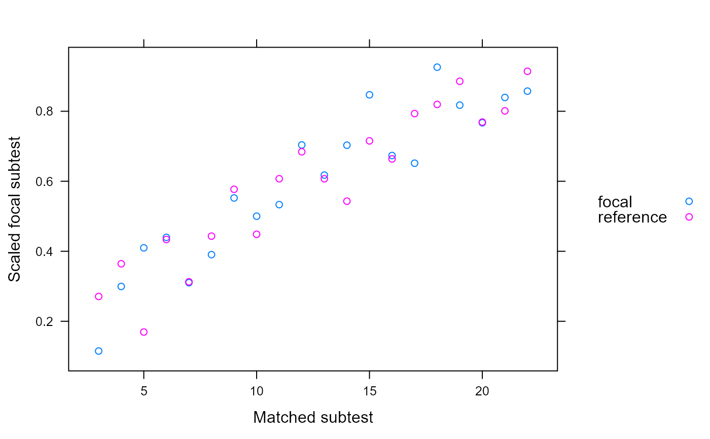
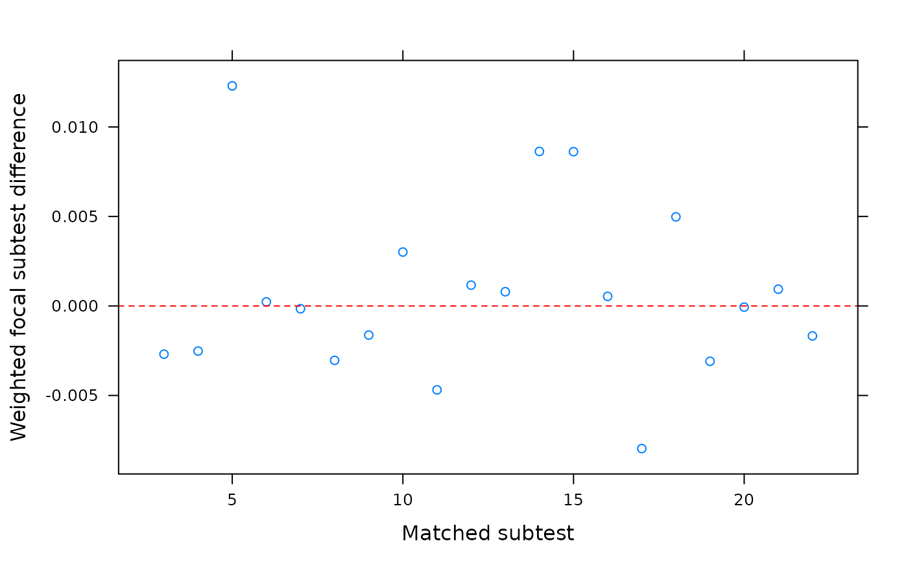
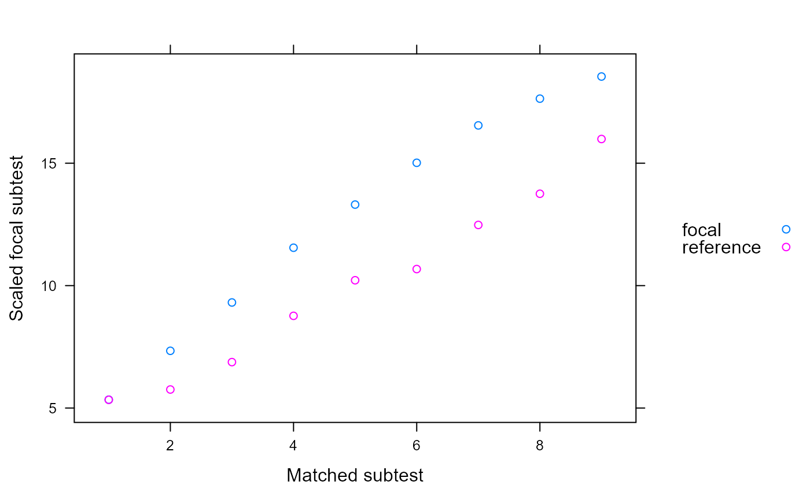
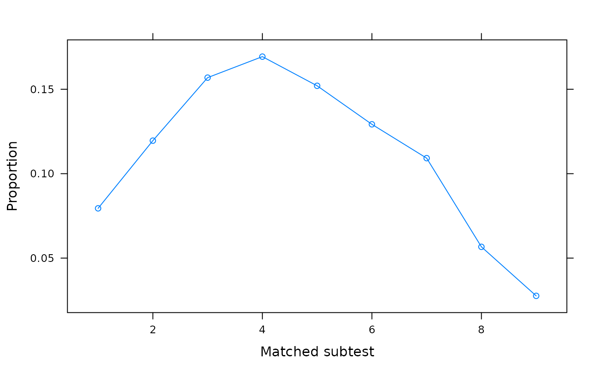
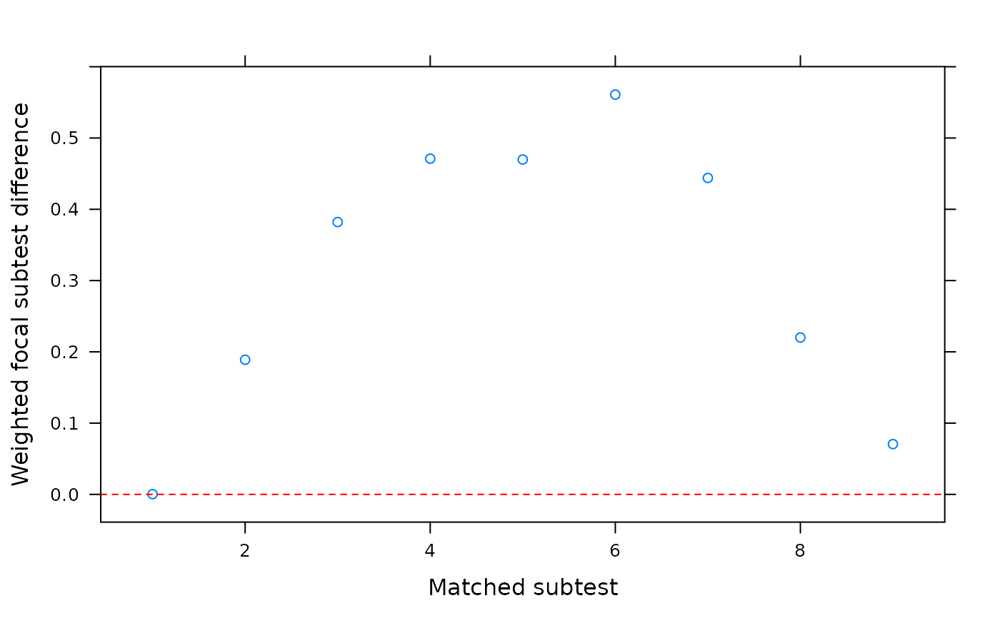

Classical test theory approach to detecting unidirectional and bidirectional (with one crossing location) DIF. This family of statistics is intended for unidimensional tests, and applies a regression-corrected matched-total score approach to quantify the response bias between two groups. Can be used for DIF, DBF, and DTF testing.
SIBTEST( dat, group, suspect_set, match_set, focal_name = unique(group)[2], guess_correction = 0, Jmin = 5, na.rm = FALSE, LiStout1996 = FALSE, permute = 1000, pk_focal = FALSE, correction = TRUE, details = FALSE, plot = "none", ... )
Arguments
| dat | integer-based dataset to be tested, containing dichotomous or polytomous responses |
|---|---|
| group | a vector indicating group membership with the same length as the number of rows in
|
| suspect_set | an integer vector indicating which items to inspect with SIBTEST. Including only one value will perform a DIF test, while including more than one will perform a simultaneous bundle test (DBF); including all non-matched items will perform DTF. If missing, a simultaneous test using all the items not listed in match_set will be used (i.e., DTF) |
| match_set | an integer vector indicating which items to use as the items which are matched
(i.e., contain no DIF). These are analogous to 'anchor' items in the likelihood method to locate
DIF. If missing, all items other than the items found in the |
| focal_name | name of the focal group; e.g., |
| guess_correction | a vector of numbers from 0 to 1 indicating how much to correct the items for guessing. It's length should be the same as ncol(dat) |
| Jmin | the minimum number of observations required when splitting the data into focal and reference groups conditioned on the matched set |
| na.rm | logical; remove rows in |
| LiStout1996 | logical; perform the crossing test for non-compensatory bias
using Li and Stout's (1996) permutation approach? Default is |
| permute | number of permutations to perform when |
| pk_focal | logical; using the group weights from the focal group instead of the total sample? Default is FALSE as per Shealy and Stout's recommendation |
| correction | logical; apply the composite correction for the difference between focal
composite scores using the true-score regression technique? Default is |
| details | logical; return a data.frame containing the details required to compute SIBTEST? |
| plot | a character input indicating the type of plot to construct. Options are |
| ... | additional plotting arguments to be passed |
Details
SIBTEST is similar to the Mantel-Haenszel approach for detecting DIF but uses a regression correction based on the KR-20/coefficient alpha reliability index to correct the observed differences when the latent trait distributions are not equal. Function supports the standard SIBTEST for dichotomous and polytomous data (compensatory) and supports crossing DIF testing (i.e., non-compensatory/non-uniform) using the asymptotic sampling distribution version of the Crossing-SIBTEST (CSIBTEST) statistic described by Chalmers (2018) and the permutation method described by Li and Stout (1996). For convenience, the beta coefficient for CSIBTEST is always reported as an absolute value.
References
Chalmers, R. P. (2018). Improving the Crossing-SIBTEST statistic for detecting non-uniform DIF. Psychometrika, 83, 2, 376-386.
Chalmers, R., P. (2012). mirt: A Multidimensional Item Response Theory Package for the R Environment. Journal of Statistical Software, 48(6), 1-29. doi: 10.18637/jss.v048.i06
Chang, H. H., Mazzeo, J. & Roussos, L. (1996). DIF for Polytomously Scored Items: An Adaptation of the SIBTEST Procedure. Journal of Educational Measurement, 33, 333-353.
Li, H.-H. & Stout, W. (1996). A new procedure for detection of crossing DIF. Psychometrika, 61, 647-677.
Shealy, R. & Stout, W. (1993). A model-based standardization approach that separates true bias/DIF from group ability differences and detect test bias/DTF as well as item bias/DIF. Psychometrika, 58, 159-194.
Author
Phil Chalmers rphilip.chalmers@gmail.com
Examples
# \donttest{ set.seed(1234) n <- 30 N <- 500 a <- matrix(1, n) d <- matrix(rnorm(n), n) group <- c(rep('reference', N), rep('focal', N*2)) ## ------------- # groups completely equal dat1 <- simdata(a, d, N, itemtype = 'dich') dat2 <- simdata(a, d, N*2, itemtype = 'dich') dat <- rbind(dat1, dat2) # DIF (all other items as anchors) SIBTEST(dat, group, suspect_set = 6)#> focal_group n_matched_set n_suspect_set beta SE X2 df p #> SIBTEST focal 29 1 -0.014 0.027 0.265 1 0.606 #> CSIBTEST focal 29 1 0.015 NA 0.331 2 0.848# Some plots depicting the above tests SIBTEST(dat, group, suspect_set = 6, plot = 'observed')SIBTEST(dat, group, suspect_set = 6, plot = 'weights')SIBTEST(dat, group, suspect_set = 6, plot = 'wdifference')# Include CSIBTEST with randomization method SIBTEST(dat, group, suspect_set = 6, LiStout1996 = TRUE)#> focal_group n_matched_set n_suspect_set beta SE X2 #> SIBTEST focal 29 1 -0.014 0.027 0.265 #> CSIBTEST focal 29 1 0.015 NA 0.331 #> CSIBTEST_randomized focal 29 1 0.016 0.026 0.373 #> df p #> SIBTEST 1 0.606 #> CSIBTEST 2 0.848 #> CSIBTEST_randomized NA 0.797# DIF (specific anchors) SIBTEST(dat, group, match_set = 1:5, suspect_set = 6)#> focal_group n_matched_set n_suspect_set beta SE X2 df p #> SIBTEST focal 5 1 -0.008 0.028 0.078 1 0.781 #> CSIBTEST focal 5 1 0.004 NA 0.105 2 0.949SIBTEST(dat, group, match_set = 1:5, suspect_set = 6, LiStout1996=TRUE)#> focal_group n_matched_set n_suspect_set beta SE X2 #> SIBTEST focal 5 1 -0.008 0.028 0.078 #> CSIBTEST focal 5 1 0.004 NA 0.105 #> CSIBTEST_randomized focal 5 1 0.006 0.026 0.046 #> df p #> SIBTEST 1 0.781 #> CSIBTEST 2 0.949 #> CSIBTEST_randomized NA 1.000# DBF (all and specific anchors, respectively) SIBTEST(dat, group, suspect_set = 11:30)#> focal_group n_matched_set n_suspect_set beta SE X2 df p #> SIBTEST focal 10 20 0.053 0.165 0.102 1 0.75 #> CSIBTEST focal 10 20 0.053 NA 0.102 1 0.75SIBTEST(dat, group, match_set = 1:5, suspect_set = 11:30)#> focal_group n_matched_set n_suspect_set beta SE X2 df p #> SIBTEST focal 5 20 0.166 0.197 0.708 1 0.4 #> CSIBTEST focal 5 20 0.166 NA 0.708 1 0.4# DTF SIBTEST(dat, group, suspect_set = 11:30)#> focal_group n_matched_set n_suspect_set beta SE X2 df p #> SIBTEST focal 10 20 0.053 0.165 0.102 1 0.75 #> CSIBTEST focal 10 20 0.053 NA 0.102 1 0.75SIBTEST(dat, group, match_set = 1:10) #equivalent#> focal_group n_matched_set n_suspect_set beta SE X2 df p #> SIBTEST focal 10 20 0.053 0.165 0.102 1 0.75 #> CSIBTEST focal 10 20 0.053 NA 0.102 1 0.75# different hyper pars dat1 <- simdata(a, d, N, itemtype = 'dich') dat2 <- simdata(a, d, N*2, itemtype = 'dich', mu = .5, sigma = matrix(1.5)) dat <- rbind(dat1, dat2) SIBTEST(dat, group, 6:30)#> focal_group n_matched_set n_suspect_set beta SE X2 df p #> SIBTEST focal 5 25 -0.232 0.249 0.869 1 0.351 #> CSIBTEST focal 5 25 0.218 NA 0.981 2 0.612SIBTEST(dat, group, 11:30)#> focal_group n_matched_set n_suspect_set beta SE X2 df p #> SIBTEST focal 10 20 -0.065 0.174 0.138 1 0.711 #> CSIBTEST focal 10 20 0.065 NA 0.437 2 0.804# DIF testing with anchors 1 through 5 SIBTEST(dat, group, 6, match_set = 1:5)#> focal_group n_matched_set n_suspect_set beta SE X2 df p #> SIBTEST focal 5 1 0.032 0.027 1.415 1 0.234 #> CSIBTEST focal 5 1 0.032 NA 1.415 1 0.234SIBTEST(dat, group, 7, match_set = 1:5)#> focal_group n_matched_set n_suspect_set beta SE X2 df p #> SIBTEST focal 5 1 -0.016 0.028 0.314 1 0.575 #> CSIBTEST focal 5 1 0.016 NA 0.314 1 0.575SIBTEST(dat, group, 8, match_set = 1:5)#> focal_group n_matched_set n_suspect_set beta SE X2 df p #> SIBTEST focal 5 1 -0.064 0.028 5.092 1 0.024 #> CSIBTEST focal 5 1 0.064 NA 5.092 1 0.024# DIF testing with all other items as anchors SIBTEST(dat, group, 6)#> focal_group n_matched_set n_suspect_set beta SE X2 df p #> SIBTEST focal 29 1 0.041 0.027 2.335 1 0.127 #> CSIBTEST focal 29 1 0.041 NA 2.335 1 0.127SIBTEST(dat, group, 7)#> focal_group n_matched_set n_suspect_set beta SE X2 df p #> SIBTEST focal 29 1 -0.001 0.028 0.001 1 0.978 #> CSIBTEST focal 29 1 0.001 NA 0.006 2 0.997SIBTEST(dat, group, 8)#> focal_group n_matched_set n_suspect_set beta SE X2 df p #> SIBTEST focal 29 1 -0.05 0.029 2.954 1 0.086 #> CSIBTEST focal 29 1 0.05 NA 2.954 1 0.086## ------------- ## systematic differing slopes and intercepts (clear DTF) dat1 <- simdata(a, d, N, itemtype = 'dich') dat2 <- simdata(a + c(numeric(15), rnorm(n-15, 1, .25)), d + c(numeric(15), rnorm(n-15, 1, 1)), N*2, itemtype = 'dich') dat <- rbind(dat1, dat2) SIBTEST(dat, group, 6:30)#> focal_group n_matched_set n_suspect_set beta SE X2 df p #> SIBTEST focal 5 25 -3.129 0.254 151.847 1 0 #> CSIBTEST focal 5 25 3.129 NA 151.847 1 0SIBTEST(dat, group, 11:30)#> focal_group n_matched_set n_suspect_set beta SE X2 df p #> SIBTEST focal 10 20 -2.808 0.168 277.707 1 0 #> CSIBTEST focal 10 20 2.808 NA 277.707 1 0# Some plots depicting the above tests SIBTEST(dat, group, suspect_set = 11:30, plot = 'observed')SIBTEST(dat, group, suspect_set = 11:30, plot = 'weights')SIBTEST(dat, group, suspect_set = 11:30, plot = 'wdifference')# DIF testing using valid anchors SIBTEST(dat, group, suspect_set = 6, match_set = 1:5)#> focal_group n_matched_set n_suspect_set beta SE X2 df p #> SIBTEST focal 5 1 0.006 0.027 0.055 1 0.814 #> CSIBTEST focal 5 1 0.006 NA 0.055 1 0.814SIBTEST(dat, group, suspect_set = 7, match_set = 1:5)#> focal_group n_matched_set n_suspect_set beta SE X2 df p #> SIBTEST focal 5 1 0.002 0.028 0.005 1 0.943 #> CSIBTEST focal 5 1 0.050 NA 3.359 2 0.186SIBTEST(dat, group, suspect_set = 30, match_set = 1:5)#> focal_group n_matched_set n_suspect_set beta SE X2 df p #> SIBTEST focal 5 1 -0.133 0.026 25.537 1 0 #> CSIBTEST focal 5 1 0.133 NA 25.537 1 0# randomization method is fairly poor when smaller matched-set used SIBTEST(dat, group, suspect_set = 30, match_set = 1:5, LiStout1996=TRUE)#> focal_group n_matched_set n_suspect_set beta SE X2 #> SIBTEST focal 5 1 -0.133 0.026 25.537 #> CSIBTEST focal 5 1 0.133 NA 25.537 #> CSIBTEST_randomized focal 5 1 0.133 0.026 25.537 #> df p #> SIBTEST 1 0.000 #> CSIBTEST 1 0.000 #> CSIBTEST_randomized NA 0.125SIBTEST(dat, group, suspect_set = 30, LiStout1996=TRUE)#> focal_group n_matched_set n_suspect_set beta SE X2 #> SIBTEST focal 29 1 0.028 0.031 0.800 #> CSIBTEST focal 29 1 0.029 NA 1.172 #> CSIBTEST_randomized focal 29 1 0.030 0.029 1.054 #> df p #> SIBTEST 1 0.371 #> CSIBTEST 2 0.556 #> CSIBTEST_randomized NA 0.319# }